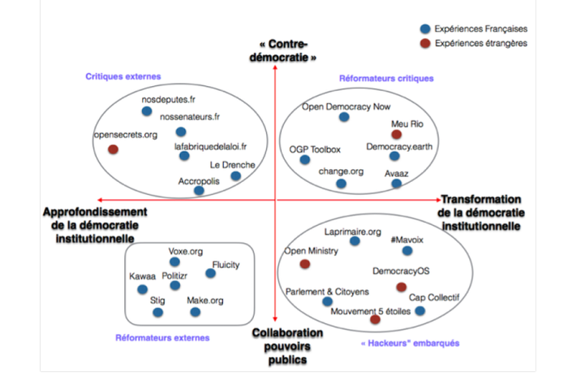

Qu’est-ce que sont les Civic Tech ? Selon Techcrunch, il s’agit de technologies visant à permettre aux citoyens ou à les aider à « rendre le gouvernement plus accessible, efficient et efficace » [1]. Cependant, cette définition vague englobe un très grand nombre de projets et d’initiatives, ayant des objectifs et des fonctionnements très variés. Comme le fait remarquer Loïc Blondiaux, Professeur des Universités au Département de science politique de la Sorbonne, “entre la start-up maligne qui vise à se positionner sur le business de la concertation entre élus et citoyens et l'initiative qui cherche à renverser la table et à subvertir la démocratie représentative, il y a un monde” [2]. Il convient donc, pour avoir une meilleure idée de ce que représente les Civic Tech, d’essayer de les classifier selon leur objectifs ainsi que leurs méthodes.
C’est ce à quoi s’essaye Clément Mabi, maître de conférences en Science de l’information et de la communication à l’UTC de Compiègne, en proposant une classification des Civic Tech [3]. Il remarque pour cela deux axes de tension. Le premier étant la proximité avec les pouvoirs publics : s’agit-il de projets visant à collaborer étroitement avec les pouvoirs publics, ou bien à faire pression sur eux depuis l'extérieur. Le deuxième axe correspond au fait de vouloir approfondir la démocratie institutionnelle, ou bien au contraire de vouloir transformer son organisation et son fonctionnement. Il en déduit 4 grands groupes de projets.
Pour Dominique Cardon, sociologue, les Civic Tech permettent au citoyen ordinaire de pouvoir s’émanciper : il peut prendre la parole sans qu’on le lui demande, produire lui même des connaissances, choisir les sujets dont il veut débattre, … [4] Si certaines de ces technologiques ne cherche qu’à rapprocher les institutions représentatives des citoyens et de la réalité sociale, d’autres essayent d’aller plus loin, selon Loïc Blondiaux, avec l’idée de “gouvernement ouvert”, et de “démocratie contributive”, et donc de réelle collaboration entre les citoyens et les institutions, qui peut se concrétiser par exemple par une co-écriture des lois.
Cependant, tous les experts émettent des réserves, quand à l’efficacité actuelle des Civic Tech : que ce soit à cause des problèmes de légitimité, de représentativité du citoyen ordinaire, ou de la volonté d’implication de celui-ci. Selon Clément Mabi, les premières études tendent à confirmer l’idée que les utilisateurs et les concepteurs des Civic Tech sont issus d’un même milieu : “jeunes, urbains et blanc”. Sarah Pinard, Doctorante en sciences politiques à l'Université Paris 2, se demande aussi comment “un collectif citoyen qui trouve sa légitimité dans les clics d’anonymes peut-il prétendre représenter l’ensemble des Français ?” Les personnes les plus actives sur les réseaux sociaux ne représentant en effet “pas forcément un panel représentatif des citoyens d’aujourd’hui” [5]. Loïc Blondiaux fait lui remarquer que la part des citoyens et des autorités publiques s’intéressant vraiment aux Civic Tech, et s’investissant, reste vraiment minoritaire. Google Trends indique également que l’engouement pour les Civic Tech sur internet est resté stable depuis 2004, et que contrairement aux Etats-Unis, les recherches sur les Civic Tech sont en France bien inférieures à celles sur la démocratie participative.
[1] C’est quoi la Civic Tech ? Civic Tech, 16 janvier 2016.
[2]Le mouvement des civic-tech : révolution démocratique ou promesse excessive? Libération.fr, 18 mai 2016.
[3] Citoyen hackeur Consulté le 17 mai 2017
[4] Bastin, Gilles. La Démocratie Internet. Promesses et limites”, de Dominique Cardon et “Médiactivistes”, de Dominique Cardon et Fabien Granjon : l’utopie Internet Le Monde.fr, 16 septembre 2010..
[3] Pinard, Sarah. Civic Tech La revue européenne des médias et du numérique, 2 février 2017.